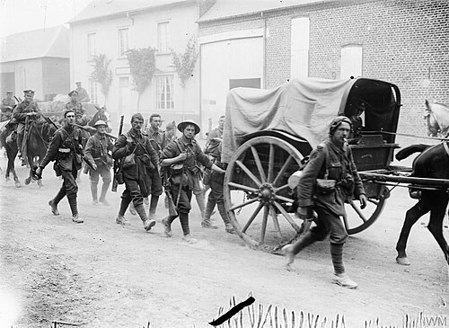
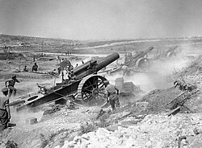
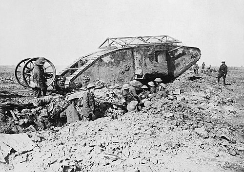
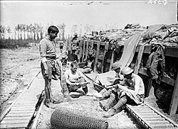
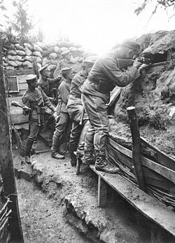
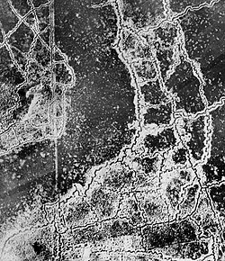

World War I
The Great War — "The Lamps Are Going Out All Over Europe"
July 28, 1914 – November 11, 1918 · Four Years of Industrial Slaughter
20M
Total Deaths
21M
Wounded
700km
Western Front Length
11/11/11
Armistice: 11th Hr, 11th Day, 11th Mo
Major Battles

Battle of the Marne (1914)
Miracle on the Marne
Germany's Schlieffen Plan to knock out France in 6 weeks was foiled. French forces (rushed to the front in Parisian taxis) stopped the German advance. This failure condemned both sides to 4 years of trench warfare — the war no one wanted.

Battle of Verdun (1916)
They Shall Not Pass
Germany attempted to "bleed France white" in a 10-month battle of attrition. 700,000 casualties — one of history's most grueling battles. French commander Petain's rallying cry "Ils ne passeront pas!" (They shall not pass) became France's defining wartime motto.

Battle of the Somme (1916)
60,000 British Casualties — Day One
The bloodiest single day in British military history — 57,470 casualties on July 1, 1916. Five months of fighting gained 8km of territory at a cost of over 1 million casualties. Introduced the tank. A byword for futile slaughter.
Battle of Jutland (1916)
The Great Naval Battle
The largest naval battle of WWI — 250 ships, 100,000 men. Britain lost more ships; Germany inflicted more damage. But the German fleet retreated to port and never seriously challenged British naval supremacy again. "The German fleet has assaulted its jailer, but is still in jail."

Spring Offensive (1918)
Germany's Last Gamble
Germany's final offensive used new infiltration tactics (Stormtroopers), achieving the war's greatest advances since 1914. But German forces outran their supply lines; fresh American troops arrived. The offensive collapsed, taking Germany's last reserves.
Hundred Days Offensive (1918)
The War Ends
Allied forces launched continuous attacks using combined arms — tanks, aircraft, artillery, infantry. German lines buckled; the army disintegrated. Germany sought armistice. At the 11th hour of the 11th day of the 11th month, the guns fell silent.
Causes: MAIN — Militarism, Alliances, Imperialism, Nationalism

The Assassination of Franz Ferdinand
Sarajevo · June 28, 1914
Archduke Franz Ferdinand, heir to the Austro-Hungarian throne, is assassinated by Serbian nationalist Gavrilo Princip. Austria-Hungary blames Serbia; a cascade of alliance obligations drags all major European powers into war within 6 weeks.
The Alliance System
Triple Alliance vs. Triple Entente
Europe was divided into two armed camps: Germany, Austria-Hungary, and Italy (Triple Alliance) vs. Britain, France, and Russia (Triple Entente). A localized conflict became global war as each nation's treaty obligations kicked in like a chain of dominoes.
Imperial Competition
Africa, Asia, and Prestige
European powers competed for colonies, markets, and prestige. The Moroccan Crises of 1905 and 1911 nearly triggered war. Germany felt encircled; Britain feared German naval expansion. Decades of tension made war feel inevitable.

New Weapons of Industrial War
Machine Guns, Gas, Tanks, Aircraft
Machine guns mowed down charging infantry; poison gas (chlorine, phosgene, mustard) created new horrors. Tanks (introduced at the Somme, 1916) promised to break the deadlock. Aircraft went from reconnaissance to dogfighting to strategic bombing in 4 years.
Timeline of the Great War
Jun 1914
Assassination at Sarajevo
Archduke Franz Ferdinand assassinated. Austria-Hungary issues a harsh ultimatum to Serbia. When Serbia partially refuses, Austria-Hungary declares war — triggering a cascade of mobilizations.
Aug 1914
War Erupts Across Europe
Germany invades Belgium, triggering British entry. By August 4, all major powers are at war. German advance through Belgium proceeds to France — but stalls at the Marne. Trench warfare begins.
1915
Gallipoli — The ANZAC Campaign
Allied attempt to knock Turkey out of the war by capturing the Dardanelles. The campaign fails catastrophically; 500,000 casualties. But it forged national identities for Australia and New Zealand.

1916
Year of Blood
Verdun and the Somme together claim over 2 million casualties in a single year. Both sides are bled white. The war becomes a test of industrial production and national willpower.
Apr 1917
America Enters the War
German unrestricted submarine warfare and the Zimmermann Telegram (proposing a German-Mexico alliance against the US) push America into the war. Fresh US troops begin arriving.
Nov 1918
Armistice — The War Ends
At 11:00 AM, November 11, the guns go silent. The Treaty of Versailles (1919) punishes Germany so harshly it plants the seeds of World War II. The "war to end all wars" sets up its sequel.
The Western Front Trenches
Click in No Man's Land to send a signal flare — the Western Front at night, 1916
📷 Gallery

Trench at Armentieres, 1916
A British breastwork trench on the Western Front. When the water table was too high to dig down, soldiers built up instead.

Cavalry in the Trenches
German cavalrymen repurposed as trench infantry — the war rendered horse cavalry obsolete within weeks of the opening battles.

Trench System from the Air, 1917
Aerial reconnaissance photograph of the Loos-Hulluch sector showing the labyrinthine trench networks that stretched 700km across France and Belgium.
First Tank in Battle — The Somme, 1916
A British Mark I male tank advances at the Battle of the Somme, September 25, 1916. The tank's debut was uneven, but promised to break the deadlock.
Artillery — The Dominant Killer
The British 39th Siege Battery at the Somme, 1916. Artillery caused roughly 60% of all WWI casualties, reshaping the landscape into a lunar wasteland.
Periscope Rifle at Gallipoli, 1915
An Australian soldier uses a periscope rifle — a clever improvisation allowing troops to fire at the enemy without exposing their heads above the parapet.
Soldiers of the Somme, 1916
British and Imperial troops on the Somme. Over one million men were killed or wounded in this five-month battle — the bloodiest in British military history.
Americans in the Argonne, 1918
US Doughboys advance through the Forest of Argonne, September 26, 1918. The Meuse-Argonne Offensive involved 1.2 million American soldiers and helped end the war.